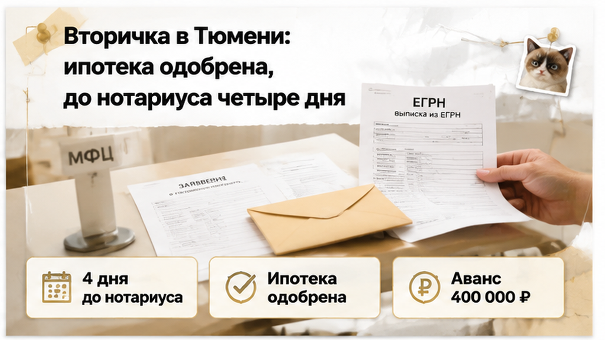
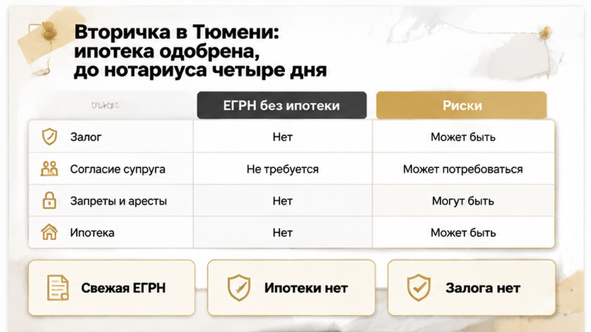
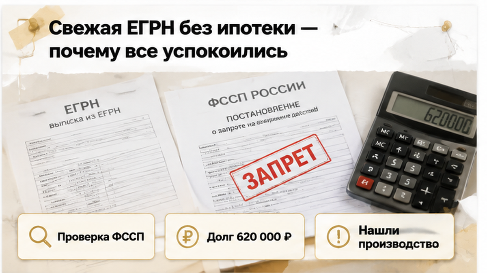
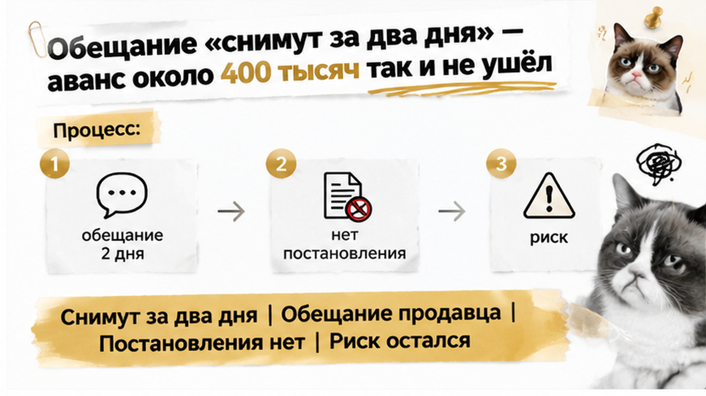
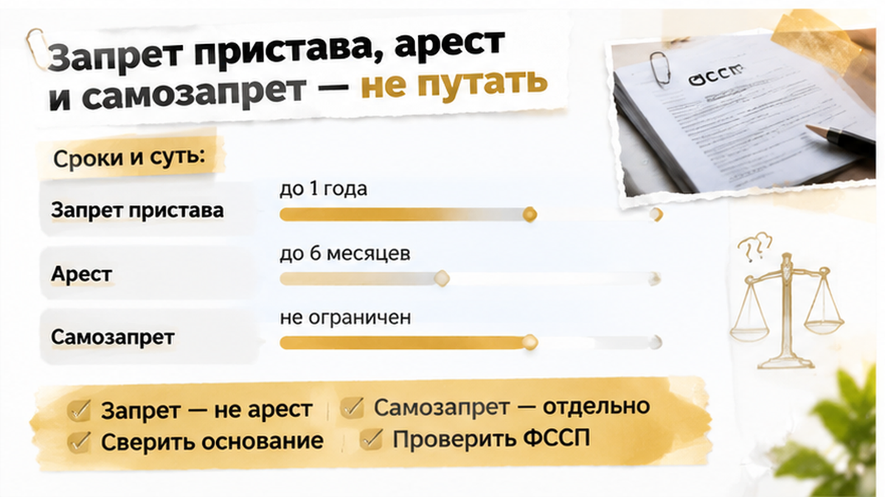
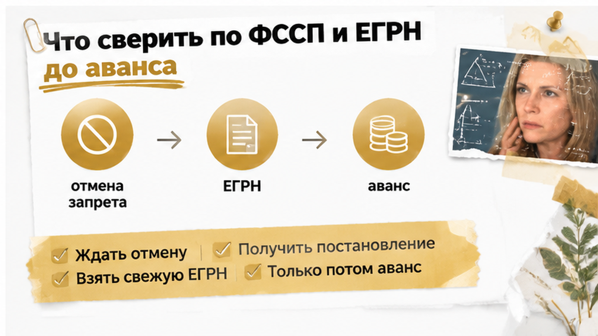

За 4 дня до нотариуса покупатели вторички в Тюмени столкнулись с запретом пристава — и остановили перевод аванса около 400 тысяч рублей. Переоформить квартиру продавца сейчас было нельзя: в ЕГРН висело ограничение ФССП на регистрацию. До этого всё выглядело гладко: банк предварительно одобрил ипотеку, свежая выписка без залога, согласие супруга на месте. Расширенная проверка нашла исполнительные производства примерно на 620 тысяч. Продавец спокойно сказал: «Снимут за два дня, нотариуса не переносим». Покупатели на слово верить не стали, и деньги так и не ушли.
Проверяем квартиры на вторичке в Тюмени до аванса: ЕГРН, база ФССП, исполнительные производства. Напишите: Telegram или MAX.

Покупатели шли по обычному порядку. Сначала решение банка, потом цена и дата с продавцом. Дальше аванс на защищённый счёт, а через четыре дня договор у нотариуса.
После одобрения ипотеки у людей почти всегда одна мысль: «Банк дал добро, значит, дальше формальности». Я слышу это постоянно. И понимаю, откуда оно: самое нервное вроде бы позади.
Только одобрение говорит об одном. Банк готов дать деньги этим людям под эту квартиру. Пропустит ли переход права регистратор, банк не отвечает. Этот разрыв хорошо видно в истории, где ипотеку одобрили, а регистрацию отменили из-за одной строки в ЕГРН. Если на квартире запрет пристава, одобренный кредит сделку не спасёт.
А тут ещё календарь подгонял. Четыре дня на аванс, банковские бумаги и подписание — это впритык. В таком темпе проверку обычно режут до минимума: выписка есть, согласие супруга есть, платим.
Обычный покупатель в эти дни думает, как всё успеть. Профи думает, какой вопрос ещё не задан. Четырёх дней на него хватает, если задать его до перевода денег, а не после.

Выписку ЕГРН читали с одним вопросом: нет ли на квартире ипотеки продавца. Её не оказалось. Все заметно выдохнули. Согласие супруга тоже проверили, а на вторичке оно часто всплывает в последний момент.
И вот тут появляется опасное ощущение, что проверка закончена. «Ипотеки нет» тихо превращается в «можно покупать». Разница в одно слово, а цена ошибки — весь аванс.
Выписка отвечает только на то, что в неё уже попало. Долги продавца перед банками, налоговой или по решениям суда там не расписаны. Исполнительные производства живут в базе ФССП, а не в ЕГРН. Бумага и реальность вообще любят расходиться: вспомните случай, где продавец показал справку о закрытии ипотеки, а банк всё ещё держал залог.
Логику покупателей понять можно. Квартира не в залоге, супруг согласен, банк одобрил. Три подтверждения подряд выглядят как гарантия.
Но посмотрите, что именно проверили. Ипотеку, семью и деньги банка. Самого продавца как должника не проверил никто. Эту дыру и закрыла расширенная проверка, которую заказали за несколько дней до аванса.

За четыре дня до нотариуса покупатели заказали расширенную проверку продавца. Обычный покупатель рассуждает так: выписка свежая, что ещё проверять. Профи знает, что ЕГРН показывает только то, что уже дошло до реестра на дату запроса. Долги, суды и приставы живут в других базах, и там их иногда видно раньше, чем в Росреестре.
В банке данных исполнительных производств на сайте ФССП (fssp.gov.ru/iss/ip) на продавца нашлось производство. Долг около 620 000 ₽. К нему прилагался запрет регистрационных действий на имущество должника. Это не долг за коммуналку и не самозапрет, который человек ставит себе сам. Это решение пристава.
Первым делом покупатели спросили: «А долг теперь на нас перейдёт?» Нет. По договору купли-продажи чужой долг не наследуют, и 620 тысяч вместе с ключами к новым владельцам не переедут. Опасность в другом. Пока запрет стоит, Росреестр не зарегистрирует переход права. Договор подписан, деньги ушли, а квартира по документам всё ещё принадлежит продавцу. Если аванс отдан без защиты, вернуть его можно только через переговоры или суд.
Продавец отреагировал спокойно, даже с лёгким раздражением. «Долг старый, я всё оплачу. Запрет снимут за два дня, нотариуса переносить не надо». И предложил внести аванс по плану, около 400 000 ₽ на защищённый счёт, чтобы «не потерять квартиру».
На этом месте покупатели остановились. Они не стали гадать, верить продавцу или нет. Они спросили, по какой бумаге узнают, что запрет снят. Сама по себе оплата долга запрет не снимает. Сначала пристав выносит постановление об отмене мер, потом оно доходит до Росреестра, и только после этого строка о запрете исчезает из ЕГРН. База ФССП после оплаты может обновляться 3–7 дней, и даже чистая строка там ещё не значит, что реестр тоже чист.
Покупатели попросили показать само постановление пристава: что именно наложено и по какому производству. Показать его продавец не смог. Одобренная ипотека в этой ситуации не помогала. Банк готов дать деньги, но при действующем запрете регистратор переход права не пропустит. Как расходятся «банк согласен» и «реестр согласен», мы разбирали в истории, где ипотеку одобрили, а регистрацию отменили из-за одной строки в ЕГРН.
Развязка такая: аванс не ушёл. Покупатели сказали продавцу прямо: «Вернёмся к сделке, когда будет постановление об отмене запрета и свежая выписка ЕГРН без него». Ждать они готовы были не два дня по обещанию, а до появления документов. Нотариуса перенесли. Квартира могла уйти другому покупателю, и они это понимали. Но 400 тысяч остались у них и не превратились в предмет спора.
Вопрос к вам: если перед авансом всплывает запрет пристава, а продавец клянётся «снимут за два дня» — вы бы внесли аванс или развернулись?
Нашли у продавца исполнительное производство или непонятную запись в ЕГРН? Пришлите выписку, разберём до передачи денег.

В тот вечер в разговоре крутились три слова, и их постоянно смешивали. Продавец говорил: «Там просто арестик». Знакомый покупателей спрашивал: «А может, он сам что-то в Росреестр подавал?»
Звучит как одно и то же. Для решения «платить или нет» это три разные вещи.
Запрет регистрационных действий ставит пристав, это ст. 64 ч. 1 п. 7 закона № 229-ФЗ. Квартира остаётся у хозяина, показывать и продавать её никто не мешает. Но Росреестр не переведёт её на нового владельца, пока запрет стоит в ЕГРН. Поэтому одобренная ипотека и подпись у нотариуса при таком запрете ничего не значат: сделка упрётся в регистрацию.
Арест имущества — это ст. 80 того же закона. Мера другая, хотя с запретом она связана и иногда идёт вместе с ним. Что именно наложено на квартиру и по какому производству, видно только из постановления пристава. Не из пересказа продавца и не из фразы «там есть ограничение» в чате.
Самозапрет — совсем другая история. Собственник сам пишет в Росреестр, что без его личного участия с квартирой ничего делать нельзя. Так защищаются от мошенников, и снять такой запрет владелец может сам. Здесь было не это. Запрет наложил пристав из-за долга продавца около 620 000 ₽, и к коммуналке этот долг отношения не имел.
Больше всего покупателей пугало одно: «А долг на нас не перейдёт?» Нет: обязательства продавца перед кредиторами на новых владельцев не перекладываются. Риск другой, и он хуже. Переход права не регистрируют, сделка зависает непонятно на сколько, одобрение ипотеки может сгореть. А деньги, отданные раньше времени, потом возвращают через уговоры или суд. Та же развилка «бумаги в порядке, а регистратор против» была в истории, где Росреестр отказал в регистрации квартиры с открытой кухней. Судьбу сделки решает не банк, а регистратор.

Покупатели не отказались от квартиры навсегда. Они отказались платить, пока нет подтверждения на бумаге. Тот же порядок можно повторить в любой сделке на вторичке, только без списка на полэкрана.
Сначала база ФССП: продавца и каждого собственника доли смотрят на fssp.gov.ru/iss/ip по ФИО и дате рождения. Крупное исполнительное производство — повод разбираться до аванса, а не после. Параллельно заказывают свежую выписку ЕГРН с разделом ограничений: отсутствие ипотеки ещё не значит «чисто», запрет пристава стоит там отдельной строкой, и выписку берут ближе к дате аванса.
Если ограничение есть, просят копию постановления пристава — номер производства, вид меры, сумма. Оплата долга сама запрет не снимает: нужно постановление об отмене и обновление ЕГРН; база ФССП после оплаты может тянуться 3–7 дней. Аванс вносят, когда в реестре нет ограничения, в соглашении прописывают возврат при новом запрете к дате сделки. Ипотечному менеджеру сразу говорят о переносе и сроке действия одобрения.

Этот порядок не заменяет разбор конкретного постановления. Бывает несколько производств на одного продавца, запреты от разных отделов, долги у второго собственника. Такое видно только по документам. Всплыл стоп-сигнал — лучше остановиться до денег, как в истории, где перед авансом всплыла умершая жена и неоформленное наследство. Неделя переноса обходится дешевле, чем 400 тысяч, застрявших в споре.
Вторичка в Тюмени от этого не становится минным полем. Просто в этой истории проверка по ФССП стояла в графике до аванса, а не после подписи.
Поэтому 400 тысяч остались у покупателей. И решение, ждать эту квартиру или искать другую, тоже осталось за ними.